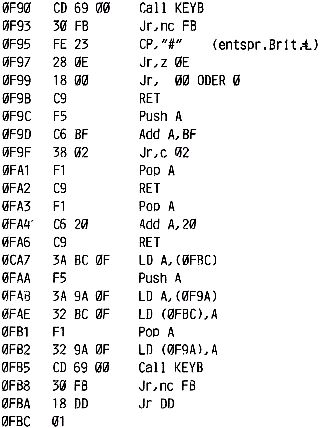

Nascom Journal |
Dezember 1981 · Ausgabe 11/12 |
muß die Platine entsprechend dem Schaltplan (Bild 2) geändert werden. Außerdem sind dann noch 5 Drahtverbindungen von der CPU-Platine aus notwendig. Diese führt man am besten steckbar aus, damit die Karte ohne Löten auch leicht entfernt werden kann. Die IC-Pin’s auf der Nascom Platine zu denen die Drahtverbindungen hergestellt werden müssen sind im Schaltplan (Bild 2) bezeichnet.
Zur Durchkontaktierung müssen die IC-Passungen möglichst hoch eingelötet werden damit auch auf der Bestückungsseite der Platine an den IC-Fassungen gelötet werden, kann. (klappt mit den meisten Fassungstypen) Eine andere Möglichkeit bietet die Verwendung von Band- oder Einzelkontakten, die ohne Schwierigkeiten von oben gelötet werden können.
Durchkontaktierungen, die nicht mit Bauteileanschlüßen zusammenfallen, müssen als erstes eingebaut werden und zwar am besten wie folgt:
Werden beim Löten die Drähtchen wieder aus dem Loch gezogen so müßen dickere Drähte oder kleinere Löcher verwendet werden, damit sie fest sitzen.
Auf diese Weise habe ich schon mehrere tausend Durchkontaktierungen ohne Fehler bewerkstelligt.
Nach dem Durchkontaktieren werden die IC-Sockel in der oben beschriebenen Art eingelötet. Dort, wo auf der Bestückungsseite eine Leiterbahn an den Sockel führt, muß nun ebenfalls oben gelötet werden, um die Durchkontaktierung herzustellen. Auf sinnvolle Reihenfolge beim Einlöten der IC-Sockel muß geachtet werden, damit die Durchkontaktierungsstellen zum Löten auch noch zugänglich sind.
Danach werden alle übrigen Bauteile eingelötet und durchkontaktiert, wo es erforderlich ist.
Zum Schluß werden die beiden 24-poligen IC-Stecker von unten (bis auf PIN 20 (CS)) auf die Sockel gelötet. Es ist unbedingt auf den richtigen Abstand zu achten. Pin 20 des Steckers wird nach außen gebogen und mit einem Draht an das dort vorgesehen Lötauge angelötet.
Wenn man sein Formatierprogramm nur unter T2 laufen lassen kann, wird man sehr bald feststellen müssen, daß man der Aufforderung der Redaktion, Groß-und Kleinbuchstaben zu verwenden, nicht folge leisten kann.Aus diesem Grund habe ich das folgende Programm GKUS (Gross-Kleinschrift Umschaltung) geschrieben, Anstelle des Aufrufs CD 69 00 wird CD 90 0F gesetzt. Man kann nun durch Drücken der Taste „#“ die Groß-bzw.Kleinschrift im Flipflop Modus an-und ausschalten. Um diese Routine im Formatierprogramm benutzen zu können, müssen an den Stellen 0C83 und 0E5C die Unterprogrammaufrufe geändert und die Warteschleife 30 F B entfernt werden.
| Seite 34 von 55 |
|---|